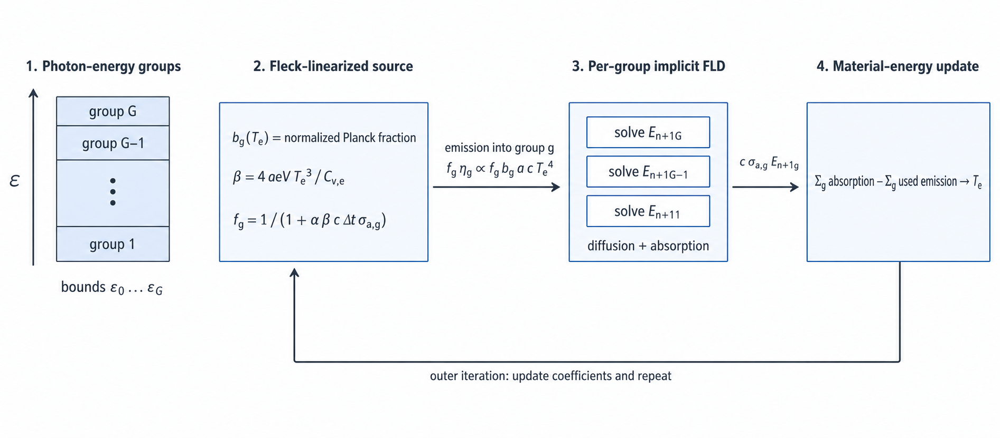
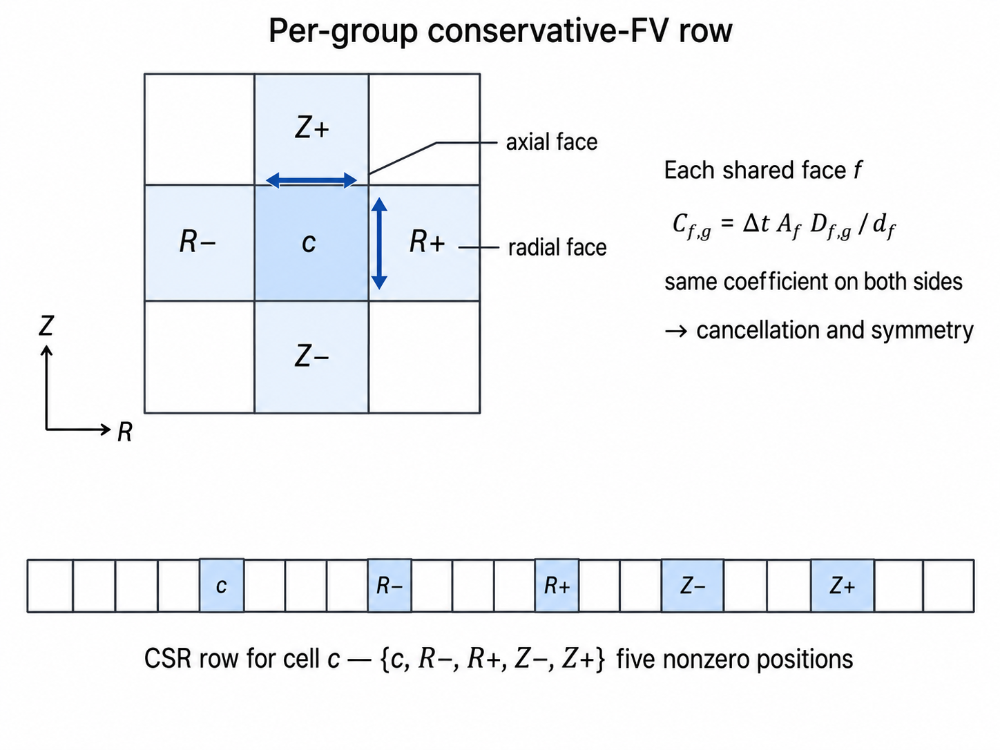

輻射輸送: 多群 FLD reference
TENRYU が実運用で用いる決定論的な輻射ソルバのひとつが、多群の流束制限拡散（FLD）である。光子エネルギーを群に分け、Fleck 型の線形化によって電子物質との「硬い」放出・吸収を陰的に結合し、1D（球・円筒・平面の各測度）または 2D 軸対称 RZ の保存型有限体積の連立系を解く。光学的に厚い領域では拡散極限を回復し、流束制限関数によって薄い領域の流束を抑える。
物理機構
ICF や高エネルギー密度のプラズマでは、高温の物質が放出した光子が標的の中を横切ってエネルギーを運ぶ。TENRYU が各セルで時間発展させる量は、光子エネルギー群ごとに積分した輻射エネルギー密度 \(E_g\) であり、これを電子の内部エネルギーへ結合する。この交換は計算のなかで最も「硬い」過程 — 固有の時定数が流体の時間刻みよりはるかに短い過程 — になり得る。熱放出が \(T_e^4\) に比例して温度とともに急増し、吸収もメッシュのセル幅よりはるかに短い光子平均自由行程で進み得るためである。
光子の平均自由行程 \(1/\sigma_R\) が輻射場の勾配の長さ尺度より短ければ、散乱・再吸収が方向の記憶を消すので角度についての強度はほぼ等方になり、1 次の角度モーメント（流束）はフィックの法則 \(\mathbf F_g=-D_g\nabla E_g\)、\(D_g=c\lambda(R)/\sigma_{R,g}\) で閉じられる。この大小関係が崩れる領域を守るのが Levermore–Pomraning の流束制限関数である。物理的には、輻射流束は光速でエネルギー密度を運ぶ値 \(cE_g\) を超えられない。制限関数は拡散極限で \(\lambda\to1/3\) を返して通常の拡散を回復し、勾配が急な場所では \(\lambda\) を下げて \(|\mathbf F_g|\le cE_g\) を守り、自由飛行の上限を破らずに自由流の側へ移行させる。一方で FLD は角度の情報を保持しない。ビーム、影、方向性のある空隙からの照射には、対になる \(S_N\) ソルバを用いる。
1 回の流体ステップのあいだに、ひとつのセルが自身の熱エネルギーを何度も放出・再吸収することがある。応答比 \(\beta=4a_{\rm eV}T_e^3/C_{v,e}\) は、平衡輻射エネルギーの温度感度を電子の熱容量で割った量である。\(T_e^4\) の源を陽的に扱うと時間刻みが非現実的なほど小さくなるため、TENRYU は Fleck の線形化 \(f=(1+\alpha\beta c\Delta t\,\sigma_a)^{-1}\) を使う。ここで \(\alpha\) は標準的な Fleck 陰性度パラメータで、実運用では完全陰的に相当する 1.0 に固定している。\(f\) の割合をステップ内での新しい熱放出、\(1-f\) の割合をステップ内での散乱に似た再放出として表す、という考え方である。\(f\) が小さいことは硬い領域であることを示し、この扱いによって群ごとの求解のなかで非線形な物質反復が不要になる。
不透明度と放出は光子エネルギーによって何桁も変わり得るため、このモデルは多群である。グレイ平均では、Marshak 波の侵入と放出スペクトルの双方を誤って表し得る。係数は LTE（局所熱力学平衡）、あるいは表・NLTE（非 LTE）の経路から供給できる。もうひとつの実運用輻射ソルバと同じく、これは決定論的な静止媒質の輸送近似であり、物質運動による \(O(v/c)\) の項は含まない。したがって輻射の移流、ドップラーによる仕事、光行差は、この求解の範囲外である（この適用範囲の決定は、リポジトリの数値契約 docs/NUMERICS.md §1.2 に記録されている）。
群構造と Fleck 線形化
群境界 \(\epsilon_0<\epsilon_1<\cdots<\epsilon_G\) に対し、\(E_{c,g}\) はセル c において区間 \([\epsilon_g,\epsilon_{g+1})\) で積分した輻射エネルギー密度である。温度 \(T\) における規格化したプランク分率を \(b_g(T)\) とし、\(\sum_g b_g=1\) とする。したがって平衡状態の初期値は \(E_{c,g}=a_{\rm eV}T^4b_g(T)\)、群の総和は \(a_{\rm eV}T^4\) である。\(a_{\rm eV}=1.3720\times10^{2}\) erg cm⁻³ eV⁻⁴ は eV 単位系で表した輻射定数である。群境界は eV で与えるが、内部の単位系は TENRYU 全体と同じ cgs + eV のままである。
境界を Radiation.group_bounds_eV="log_uniform" で生成する場合は、compute_T_range_eV \(=[T_{min},T_{max}]\) を光子エネルギーの窓として、\(G\) 個の対数等分の区間を張る。対数刻みにするのは、プランクスペクトルのピークが \(h\nu\approx2.82\,k_BT\) と温度に比例して桁ごと移動し、不透明度も光子エネルギーで何桁も変わるためである。等比の境界は、想定される全温度域におおむね一定の相対分解能を与える。窓の上端より高エネルギー側の黒体の尾は群構造の外になる（規格化された \(b_g\) は総和 1 を保つため保存は壊れない）。したがって範囲には、計算中に現れる最低・最高温度に対して十分な余裕を持たせること。
物質側の応答は、電子の定積熱容量と温度感度
$$ C_{v,e}=\rho\left(\frac{\partial e_e}{\partial T_e}\right)_\rho, \qquad \beta=\frac{4a_{\rm eV}T_e^3}{C_{v,e}} $$から構成する。この物質側の線形化に使う基本量は、FLD と SN が共有する。標準的な Fleck 係数は \(f=(1+\alpha\beta c\Delta t\,\sigma_{a,P})^{-1}\) である。現在の一定不透明度の FLD 経路ではこれを群別に \(f_{c,g}=(1+\alpha\beta_c c\Delta t\,\sigma_{a,c,g})^{-1}\) とし、表・NLTE の経路では放出平均に基づく係数を使う。\(f\) が小さいほど、その時間刻み内での放出と再吸収の硬い部分を実効的な散乱として線形化し、陽的な温度応答を弱める。ドライバはさらに、Fleck 線形化を使う経路で \(f\) が Numerics.dt.f_min_fleck（既定 0.01）を下回らないよう時間刻みを制限する — 時間刻み制御と CFL に載る輻射の dt 制限である。
各群の後退オイラー有限体積の方程式は、同じ線形化した源を用いて次の形になる。
$$ \begin{aligned} V_cE^{n+1}_{c,g} &+\Delta t\,c\sigma^{PA}_{c,g}V_cE^{n+1}_{c,g} -\Delta t\sum_{f\in\partial c} A_fD_{f,g}\frac{E^{n+1}_{n(f),g}-E^{n+1}_{c,g}}{d_f} \\ &=V_cE^n_{c,g} +\Delta t\,V_cf_{c,g}\eta_{c,g} +\Delta t\,V_c(1-f_{c,g})c\sigma^{PA}_{c,g}E^n_{c,g}, \end{aligned} $$ $$ \eta_{c,g}=c\sigma^{PE}_{c,g}a_{\rm eV}(T_e^n)^4b_g(T_e^n). $$ここで \(\sigma^{PA}\) と \(\sigma^{PE}\) は、それぞれ吸収と放出に使う群ごとの係数である。右辺の \(f\eta_g\) が線形化したあとの熱放出、\((1-f)c\sigma^{PA}E_g^n\) が同じ刻み内での実効的な再放出を表す。
- \(b_g(T)\) は規格化したプランク分率であり、黒体エネルギーと熱放出のうち群 \(g\) が占める割合である。\(\sum_g b_g=1\) を満たす。
- \(\beta=4a_{\rm eV}T_e^3/C_{v,e}\) は輻射と物質の硬さの比であり、平衡輻射エネルギーの温度微分を電子の体積熱容量で割った量である。
- \(f_{c,g}\) は Fleck の陰性度である。\((1-f_{c,g})c\sigma^{PA}_{c,g}E^n_{c,g}\) は、刻み内の吸収を新しい熱源としてではなく、散乱に似た実効的な再放出として戻す。
- \(\sigma^{PA}_{c,g}\) は除去と沈着に使うプランク吸収係数、\(\sigma^{PE}_{c,g}\) は \(\eta_{c,g}\) を通じて放射率を決める係数である。LTE の経路では一致するが、NLTE の表では異なり得る。
- \(D_{f,g}\) は面 \(f\) 上の拡散係数である。1D では面上に置いた \(E\) と \(\sigma_R\) から評価し、2D RZ では隣り合うセル中心の \(D\) の調和平均を取る。共有する面では両側のセルが同じ係数を使う。流束項の \(A_f\) は面の面積、\(d_f\) は面を挟む 2 つのセル中心間の距離、\(n(f)\) は面 \(f\) の向こう側の隣接セルである。
- \(R=|\nabla E_g|/(\sigma_{R,g}E_g)\) は、光子平均自由行程と輻射エネルギーの勾配長の比である。\(R\ll1\) は拡散的な領域、\(R\gg1\) は制限関数が効く自由流の極限を表す。

流束制限関数と線形ソルバ
FLD は群ごとに、局所的な無次元の勾配と拡散係数を作る。
$$ R_{c,g}=\frac{|\nabla E_g|_c}{\sigma_{R,c,g}\max(E_{c,g},E_{\rm floor})}, \quad(E_{\rm floor}\text{ は分母だけを守る小さな正の下限}) \qquad D_{c,g}=\frac{c\lambda(R_{c,g})}{\sigma_{R,c,g}}, $$ $$ \lambda_{\rm LP}(R)=\frac{1}{R}\left(\coth R-\frac{1}{R}\right). $$Levermore–Pomraning 形は \(R\to0\) で \(\lambda\to1/3\) となって拡散極限を回復し、勾配が大きいところでは流束を制限する。1D では面上の \(\sigma_R\) と \(E\) から面の係数を評価し、2D RZ ではセル中心の \(D\) を作って内部の面で調和平均を取る。共有する面では両側のセルが同じ \(A_fD_f/d_f\) を使うため、内部の流束は符号が反転して相殺する。中心間の距離が幾何的な許容値を下回る退化した面は、係数の発散を避けるために組み立てから除外する。
1D では、各群の行列は三重対角になる。GPU 上では群数 \(G\) を一括処理の数、セル数を系の大きさとして、cusparseDgtsv2StridedBatch で全群をまとめて解く。2D RZ では各セルが \(R-\)、\(R+\)、\(Z-\)、\(Z+\) の 4 つの面で隣接するセルだけと結合するため、群ごとに CSR の 5 点ステンシルを組み立てる。線形反復は共役勾配法を基礎とする。前処理は、既定の linear_solver_2d="auto" が設定検証の時点で格子形状から解決する：\(n_r\) が 2 の冪かつ \(n_z\ge3\) なら r 方向半粗化の幾何マルチグリッド（GMG）、それ以外で \(n_z\ge3\) なら z ラインの block-Jacobi 前処理（半径ラインごとの三重対角を厳密に解き、\(\Delta z<\Delta r\) の異方ステンシルで伸びる反復を抑える）、どちらも成立しなければヤコビ前処理付き共役勾配法である。局所的なヤコビ前処理は格子が大きくなるほど収束が遅くなるのに対し、GMG は局所前処理が減衰させにくい長波長の誤差成分を粗格子の階層で処理する。解決結果は起動時に 1 回ログへ記録され、凍結後の設定にも解決後の値が入る。

GMG は、半径方向の集約による区分定数の補間演算子 \(P\) と、その転置による制限を使い、各粗格子の演算子は細かい側の行列 \(A\) に対するガレルキン積 \(P^T\!AP\) である。係数や境界条件を粗い格子で評価し直さないことで、保存型有限体積の 5 点形式と境界からの漏れ出しを保つ。Kershaw の 9 点法 [8] は、歪んだ四辺形上の拡散に対する参照用の離散化（熱伝導カーネルの 2D 演算子が使用）であり、FLD の実運用ステンシルではない。
外側反復、物質の更新、ボイドセル
係数を構築する。 群境界を確定し、規格化した \(b_g(T_e)\) を評価して、\(\sigma^{PA}_{c,g}\)、\(\sigma^{PE}_{c,g}\)、\(\sigma_{R,c,g}\) を埋める。同じ電子 EOS の熱容量から \(\beta_c\)、Fleck 係数、制限関数の引数、そして有効な各セル・各群の面の拡散係数を作る。Marshak 温度を与える関数はすでに表へ凍結されており、求解に入る時点の値をこの外側反復のあいだ固定する。
全群を組み立てて解く。 1D 球対称の行列は三重対角なので、\(G\) 本を
cusparseDgtsv2StridedBatchの 1 回の一括処理として解く。2D RZ では群ごとに保存型の 5 点 CSR 系を組み立て、ヤコビ前処理付き共役勾配法または GMG 系の前処理を使う。線形反復の収束条件は \(\lVert r_k\rVert\le\texttt{cg_inner_tol}\,N_{\rm ref}\) で、既定はcg_inner_tol=1e-10、参照ノルムは選んだ規格化に応じて \(N_{\rm ref}=\lVert r_0\rVert\) または \(\max(\lVert b\rVert,\mathrm{tiny})\) である（tiny は右辺が 0 のときだけを守る微小な正の定数）。これは粒子の無作為抽出を使わない決定論的な輸送の経路である。2D の前処理が異なっても目標とする \(A^{-1}b\) は同じだが、前処理をまたいでビット単位で同じ反復列になることは保証しない。-
実際に使用した源を凍結する。 全群を解いたあとに
$$ S^{\rm used}_{c,g}=\Delta t\,V_c \left[f_{c,g}\eta_{c,g}+(1-f_{c,g})c\sigma^{PA}_{c,g}E^n_{c,g}\right] $$を保存する。物質側の台帳の放出側には、新しい温度から評価し直した総プランク源ではなく、この量そのものを使う。
-
物質を局所的に閉じる。 セル局所のニュートン法により、解いた群の場による吸収と、同じ \(S^{\rm used}\) から電子の内部エネルギーを更新する。
$$ \rho_cV_c\left[e_e(\rho_c,T_e^{n+1})-e_e(\rho_c,T_e^n)\right] =\sum_g\left[\Delta t\,V_c\,c\sigma^{PA}_{c,g}E^{n+1}_{c,g}-S^{\rm used}_{c,g}\right]. $$左辺はステップ全体での（\(T_e^n\) に係留した）セルの電子エネルギー変化、右辺は吸収した群エネルギーから実際に適用した放出 — 凍結した \(S^{\rm used}\) そのもの — を引いた量である。
外側の不動点を判定する。 この反復が自己無撞着にする量 — そして収束判定の対象 — は電子温度 \(T_e\)、いいかえれば \(T_e\) から評価する係数一式である。循環の構造は、群の連立系が \(T_e\) における \(b_g\)・不透明度・\(f\)（およびリミッタの拡散係数は現在の \(E_g\) 反復値）を必要とする一方、その \(T_e\) 自身は解いた \(E_g\) を受け取る物質側の閉包から得られる、という点にある。各反復は緩和なしの純粋なピカール代入で、凍結した段入口状態から後退オイラーの 1 ステップ全体を解き直す — 右辺は常に \(E^n_g\) に、物質収支は \(T_e^n\) に係留されるため、反復は前の結果へ積み増すのではなく置き換える。新しい \(T_e\) から \(b_g\)、不透明度、\(f\)、\(D_g\) を更新して群の求解を繰り返し、連続する反復間の変化が \(\max_c|T^{k+1}_{e,c}-T^{k}_{e,c}|/\max(T^{k+1}_{e,c},T_{\rm floor})<\texttt{outer_tol}\)（\(T_{\rm floor}\) は設定した温度下限
Te_floor_eV）を満たしたら停止する。実運用の既定値はouter_tol=1e-5、max_outer_iterations=20である。許容値に達しないまま上限に到達した場合は最終反復の結果を採用し、頻度を制限した実行ログの警告に未収束の残差を記録する。境界と台帳を閉じる。 上の離散項から
rad_dep\(=\Delta t\,V_c\,c\sigma^{PA}E^{n+1}\) とrad_emit\(=S^{\rm used}\) を作り、同じ境界の行からmarshak_inとescapedを作る。共有する面はひとつの \(A_fD_{f,g}/d_f\) を使うので、2 つのセルからの寄与が相殺し、群について総和した輻射と物質の変化は、浮動小数点の和の範囲で境界の台帳へ集約される。ボイドの契約を守る。 明示的なボイドのマスクをもつ表・NLTE の経路では \(f=1\)、\(\sigma^{PA}=\sigma^{PE}=\sigma_R=\eta=0\) とし、物質との交換と温度の更新を行わない。不透明度の下限は、拡散係数を有限に保つためだけに使う。これは数値的に安定なボイドの扱いであって、角度に依存する自由流のモデルではない。
境界条件とエネルギー収支
反射面では法線方向の流束を 0 にする。真空面には Milne の漏れ出しの形 \(F_{{\rm out},g}=cE_g/2\) を使う。Marshak 面は、入射する黒体場と拡散する場を
$$ F_{{\rm out},g}=\frac{c}{4}E_g-F_{{\rm inc},g}, \qquad F_{{\rm inc},g}=\frac{c}{4}a_{\rm eV}T_r^4b_g(T_r) $$のように組にし、行列の対角へ \(\Delta t\,A_fc/4\)、右辺へ \(\Delta t\,A_fF_{{\rm inc},g}\) を加える。真空面の係数 \(cE_g/2\) と Marshak 面の漏れ \(cE_g/4\) の因子 2 の差は、境界の閉じ方の違いであって矛盾ではない。真空面は P1（拡散）角度クロージャの下で入射ゼロを課す Marshak/Milne の真空条件である — 半範囲の放出が \(cE/4\) の場から入射半分を消去すると、正味の流出は \(cE/2\) へ倍増する。一方 Marshak 駆動面は半範囲の交換を明示的に記帳し、\(cE_g/4\) の流出と与えられた入射 \(F_{{\rm inc},g}\) を対にするため、輻射平衡（\(E_g=a_{\rm eV}T_r^4b_g\)）で正味の流束が厳密に消える。1D の内側 r 面は反射、外側 r 面は真空・反射・Marshak から選べる。2D RZ では、半径方向・軸方向の各外面に同じ面の契約を適用する。
\(T_r\) は、一定値の Radiation.boundary.marshak_Tr_eV、またはデッキ側の関数 Radiation.boundary.marshak_Tr で与える。関数は初期化時に時系列の表へ凍結されるため、時間積分の最中に Python を呼ぶことはない。求解に入る時点の state.t で 1 回だけ評価した値は、その外側反復のあいだ変わらない。
同じ離散項から、正の Marshak 入射を marshak_in へ、真空および正の Marshak 外向き流束を逸出台帳 — 履歴には energy/radiation_escaped として書かれる — へ加算する。物質側の rad_dep と rad_emit も、上の吸収項と \(S^{\rm used}\) から直接作る。共有する面の寄与は 2 つのセルのあいだで厳密に相殺するため、閉じた領域で群について総和すると、輻射と物質の変化は境界の台帳へ集約される。不透明度が平坦な場合の多群とグレイの一致も、浮動小数点和の丸めを除いて同じ収支になる。
主要な namelist キー
以下は Radiation の FLD 設定から選んだ項目である。完全なスキーマと組合せの制約は namelist リファレンスを参照のこと。
| キー | 既定値 / 例 | 用途 |
|---|---|---|
Radiation.enabled | True | 輻射の演算子を有効化。 |
Radiation.mode | "multigroup_diffusion" | このページで述べる決定論的な FLD ソルバを選択。 |
Radiation.groups | 1 | 光子エネルギー群の数 \(G\)。 |
Radiation.group_bounds_eV | [] または "log_uniform" | 長さ \(G+1\) の群境界、または対数等間隔で生成する指定。 |
Radiation.compute_T_range_eV | [] | "log_uniform" による群生成に使う温度範囲。 |
Radiation.multigroup_diffusion.flux_limiter | "levermore_pomraning" | FLD の流束制限関数。LP 形が既定である。 |
Radiation.multigroup_diffusion.max_outer_iterations | 20 | 係数と物質の連成に対する外側反復の上限。 |
Radiation.multigroup_diffusion.outer_tol | 1e-5 | 電子温度の相対収束の許容値。 |
Radiation.multigroup_diffusion.boundary.inner_r / outer_r | "reflect" / "vacuum" | FLD の半径方向の面種別。外面は marshak も選べる。 |
Radiation.boundary.marshak_Tr_eV / marshak_Tr | 一定値 / 関数 | Marshak の \(T_r\)。関数は初期化時に表へ変換され、実行時に Python は動かない。 |
検証
- 解析解による多群 Marshak スペクトルの検査
fld_1d_mg_planar_marshak_spectrumとfld_1d_mg_planar_freqdep_relaxationは、独立に計算したプランク分率に対する \(G=8\) のプラトーと、同じ振動数依存の不透明度に対する閉じた形の群別緩和解を確認する。 - 線形化した連成を対で確かめる試験は、0 次元の Fleck 常微分方程式の閉じた形の解、群別の NLTE スペクトルと Fleck 係数の検査、Su–Olson のピケットフェンス問題 [6] — 2 本の不透明度バンドをもつ半解析的なモデルで、バンドの割り当てを入れ替えても解が変わらない重ね合わせ対称性をゲートが利用する — を組み合わせて、線形化された物質結合を固定する。
fld_1d_volume_source_balanceの修正により、収支の残差は \(7.9\times10^{-6}\) から \(2.1\times10^{-10}\) へ低下した。 verify_gxii_1d_fld_regressionは GXII の 1D 基準回帰試験として、吸収した輻射エネルギー、最大圧縮時刻、シェル半径、ピーク密度、面密度、中心温度といった輻射爆縮の指標を判定する。- エネルギー保存の試験は、共有面での相殺、
marshak_inとescaped、物質側の放出と沈着を、ひとつの台帳に閉じる。流体を凍結した 2D の多群・グレイ一致検査は \(\varepsilon_{L2}\le10^{-8}\) と \(\varepsilon_{L\infty}\le10^{-6}\) — 場全体の相対 RMS 差と相対最大差 — および台帳のずれの差 \(\le10^{-10}\) を要求し、閉じた箱での実測のずれは \(\le5.1\times10^{-16}\) である。 - 2D RZ の層状スラブ Marshak 試験群は、境界の立ち上がり、波面の位置、分布、物質界面での流束、各ステップの台帳残差を、独立な陰的ニュートン有限体積の参照解と比較する。短い時間窓での台帳の判定基準は \(\le10^{-10}\)、認証時の判定基準は \(\varepsilon_{L2}(E)\le0.02\)、界面流束の不連続 \(\le10^{-3}\) である。
参考文献
- J. A. Fleck, Jr. and J. D. Cummings, "An Implicit Monte Carlo Scheme for Calculating Time and Frequency Dependent Nonlinear Radiation Transport," J. Comput. Phys. 8, 313–342 (1971). doi:10.1016/0021-9991(71)90015-5
- G. D. Levermore and G. C. Pomraning, "A Flux-Limited Diffusion Theory," Astrophys. J. 248, 321–334 (1981). doi:10.1086/159157
- J. E. Morel and G. R. Montry, "Analysis and Elimination of the Discrete-Ordinates Flux Dip," Transp. Theory Stat. Phys. 13, 615–633 (1984). doi:10.1080/00411458408211661
- N. J. Turner and J. M. Stone, "A Module for Radiation Hydrodynamic Calculations with ZEUS-2D Using Flux-Limited Diffusion," Astrophys. J. Suppl. Ser. 135, 95–107 (2001). doi:10.1086/321779
- E. W. Larsen, A. Kumar, and J. E. Morel, "Properties of the Implicitly Time-Differenced Equations of Thermal Radiation Transport," J. Comput. Phys. 238, 82–96 (2013). doi:10.1016/j.jcp.2012.11.034
- B. Su and G. L. Olson, "Benchmark Results for the Non-Equilibrium Marshak Diffusion Problem," J. Quant. Spectrosc. Radiat. Transfer 56, 337–351 (1996). doi:10.1016/0022-4073(96)84524-9
- R. E. Marshak, "Effect of Radiation on Shock Wave Behavior," Phys. Fluids 1, 24–29 (1958). doi:10.1063/1.1724332
- D. S. Kershaw, "Differencing of the Diffusion Equation in Lagrangian Hydrodynamic Codes," J. Comput. Phys. 39, 375–395 (1981). doi:10.1016/0021-9991(81)90158-3